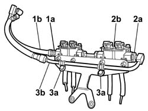
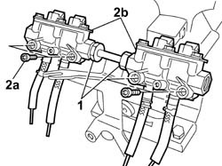

1057B68 GPL INJECTOR UNIT WITH CONNECTION PIPES TO PRESSURE REGULATOR DISMANTLE AND REBUILD AT BENCH
- Path
- Procedures > 10 ENGINE UNIT > 1057 GPL INJECTION SYSTEM > 1057B GPL MULTIPOINT INJECTION FUEL SYSTEM > 1057B68 GPL INJECTOR UNIT WITH CONNECTION PIPES TO PRESSURE REGULATOR DISMANTLE AND REBUILD AT BENCH
- Kind
- repair procedure (removal / refitting; the operation number is the code)
- Applies to
- engines: 2.0 16V; all production periods
- Interactive page
- https://sloeber94.github.io/elrnDB-fDct/en/#/244002701
Applies to: engines: 2.0 16V; all production periods
 Removing
Removing
 Refitting
Refitting1. Undo the connector (1a) and remove the flexible LPG supply pipe (1b) to the injectors; keep the seal underneath taking care not to damage the pipe threaded seat.
2. Undo the connector (2a) for the rigid return pipe to the injector body (2b); keep the seal underneath taking special care not to damage the pipe threaded seat.
3. Undo the bolts (3a) and remove the rigid LPG return pipe (3b) from the injectors.

Applies to: engines: 2.0 16V; all production periods
1. Undo the connectors for the pipe joining the injector holder bodies.
2. Undo the bolts (2a) and remove the injector holder bodies (2b) from the mounting bracket.

Applies to: engines: 2.0 16V; all production periods
Refitting
RemovingPosition the injector holder bodies and secure them to the mounting bracket using the bolts after having joined them to each other using the special connecting pipe.
Tighten the connectors for the pipe joining the injector holder bodies to the recommended torque.
Value daNm | Fastening | Component | Ø | |
|---|---|---|---|---|
- | 7 | Connector | M18 X 1.5 |
Tighten the connector for the rigid return pipe to the injector holder body.
Value daNm | Fastening | Component | Ø | |
|---|---|---|---|---|
- | 7 | Connector | M18 X 1.5 |
Fasten the rigid return pipe to the injector holder bracket using the special bands.
Screw in the connector for the flexible supply pipe on the injector body without tightening it.
Value daNm | Fastening | Component | Ø | |
|---|---|---|---|---|
- | 7 | Connector | M18 X 1.5 |